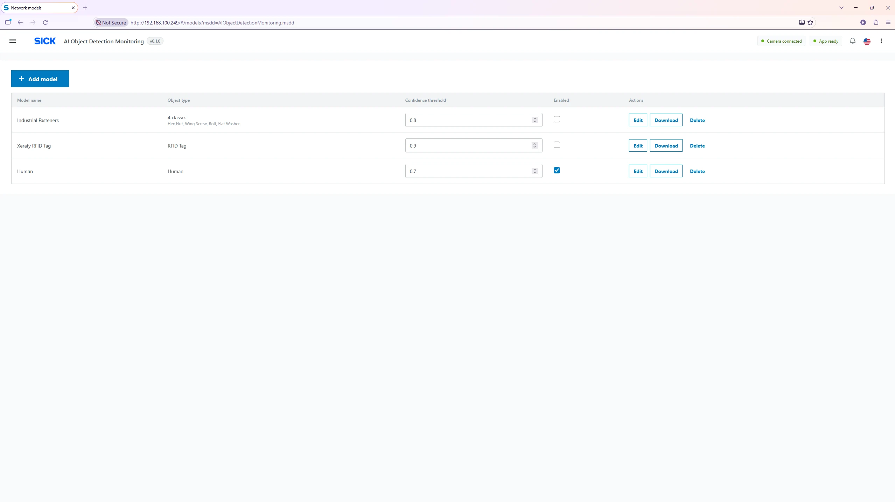
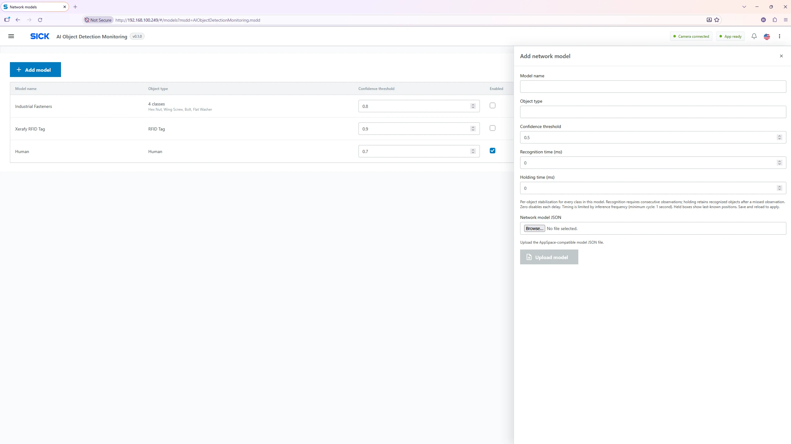
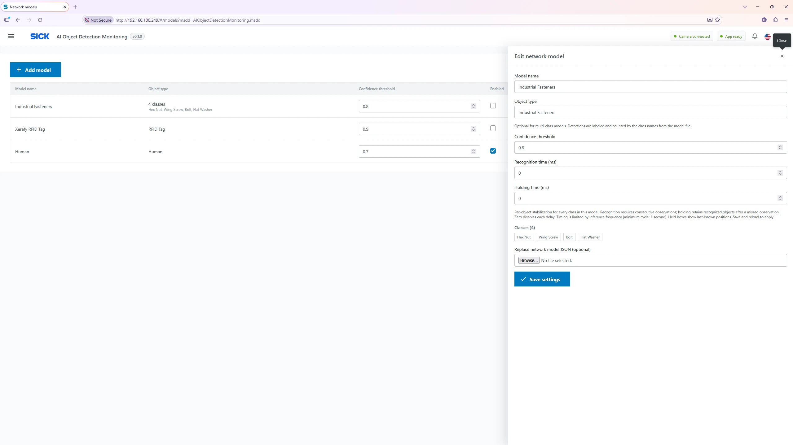
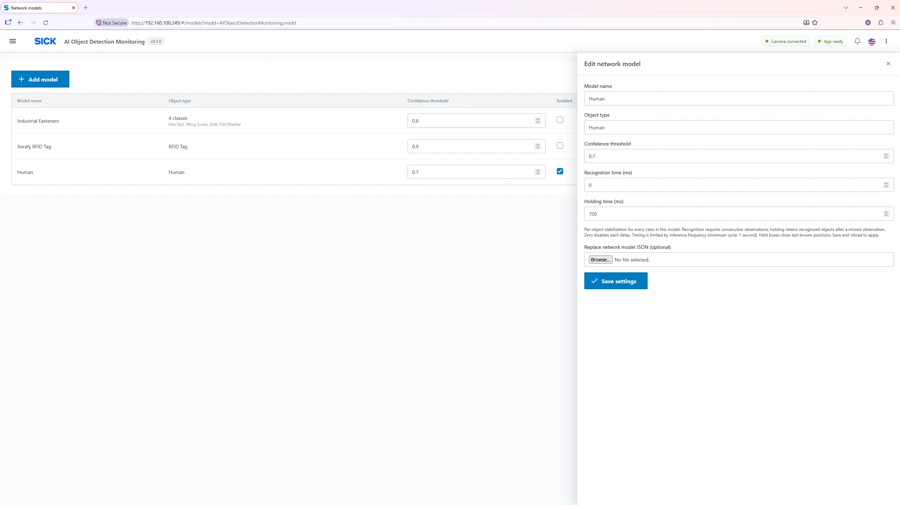
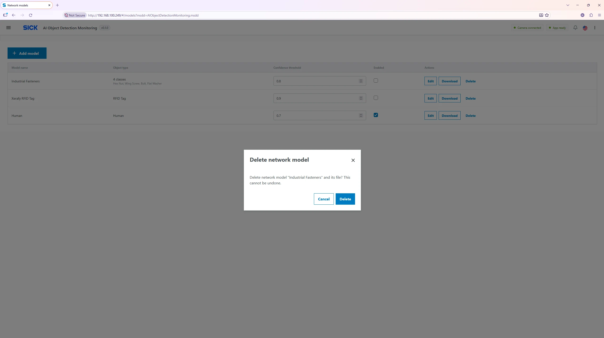

Network Models Page
Add, configure, download, replace or delete the detection models stored on the camera. Model files must be compatible SICK AppSpace network-model JSON files, not arbitrary ONNX/Yolo files renamed as JSON.

Model list
| Column / action | Meaning |
|---|---|
| Model name | Human-friendly name of the network (for example Human or Industrial Fasteners). |
| Object type / classes | Single-class object type, or automatically extracted class names and class count for a multiclass network. |
| Confidence threshold | 0.00–1.00; lower accepts weaker detections, higher accepts only stronger detections. |
| Enabled | Whether the network should run after reload, subject to the active model limit. |
| Edit | Modify name, object type, threshold, recognition and holding times; optionally replace model JSON. |
| Download | Download the existing model JSON file from the device for backup or transfer. |
| Delete | Remove the model entry and file after confirmation. Ensure other applications do not depend on it. |
Add a compatible network model
-
Obtain a compatible network-model
.jsonfile from SICK or create one using the appropriate SICK model-training workflow. - Click Add model and enter a model name; this name is also used to generate the internal model ID. Use stable, simple names if settings backups will be reused.
- For a single-class model, fill in Object type; a multi-class file can supply its classes automatically, so Object type may be optional.
- Set the confidence threshold (for example 0.70), Recognition time and Holding time in milliseconds.
- Choose the network-model JSON file and select Upload. Confirm it appears in the list; adjust Enabled as necessary.
- Choose ⋮ → Reload app to start using the new model. Open Monitoring and test detections.

Edit / replace a model
Click Edit to adjust its configuration. To replace the trained network while keeping the model entry, choose an optional replacement JSON file, save, and reload. The replacement is validated before the old model file is replaced. For multi-class networks, the class list is read from the file. When class names stay the same, existing class colors can be retained.


Understanding model parameters
| Setting | Description |
|---|---|
| Model name | Display label; changing the label does not itself retrain the model. |
| Object type | Display type/group for a single class; multi-class detections use the labels embedded in the trained network. |
| Threshold | Score filter between 0.00 and 1.00. |
| Recognition time (ms) | Continuous matched-observation duration required before reporting an object; 0–600,000 ms. |
| Holding time (ms) | Time to retain an already-recognized, temporarily missing object at its last-known position; 0–600,000 ms. |
| Enabled | Loads/runs the network after application reload; if too many models are enabled, the active-model limit applies. |
Delete / download and reload
Use Download to keep a separate copy of the network file. Use Delete only after reviewing the confirmation dialog; the model file is deleted too. After model changes, check the Reload required indication, reload the app and retest. A model file must be present on the camera even if its model entry is disabled when importing a full settings backup that references it.
